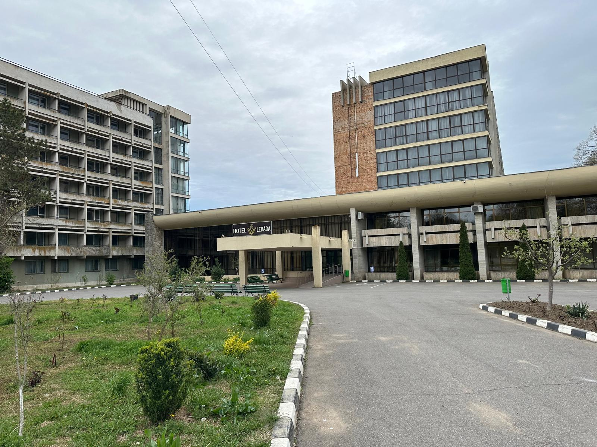

Despre
Stațiunea Amara, situată în județul Ialomița, la doar 7 km de Slobozia, este o destinație balneoclimaterică de interes național. Așezată pe malul lacului Amara, aceasta se remarcă prin nămolul sapropelic și apele minerale cu proprietăți terapeutice, utilizate în tratamente pentru afecțiuni reumatismale, respiratorii și digestive. Lacul, cu o formă asemănătoare literei „S”, se întinde pe o suprafață de peste 130 de hectare și este înconjurat de un parc dendrologic și plaje amenajate. Stațiunea oferă o combinație ideală între relaxare, tratament și natură, fiind accesibilă din București în aproximativ două ore.
Obiective Turistice
Centrul orașului
Centrul orașului Amara, situat în inima județului Ialomița, reflectă echilibrul dintre administrație, credință și educație. Aici se regăsesc cele mai importante instituții care susțin viața comunității locale.
Primăria Amara, amplasată pe strada Nicolae Bălcescu nr. 91, este o clădire modernă care deservește cetățenii prin diverse servicii publice, de la urbanism și taxe locale până la evidența populației. Este centrul decizional al orașului, locul unde se coordonează dezvoltarea locală și inițiativele administrative.
Nu departe, se află Biserica „Schimbarea la Față”, cunoscută și sub numele de „Biserica Albastră” datorită culorii sale distincte. Este un loc de reculegere și spiritualitate, dar și un spațiu unde se desfășoară activități pentru tineri și acțiuni sociale.
Tot în centru se găsește Școala Gimnazială „George Vâlsan”, una dintre cele mai importante instituții educaționale din zonă. Școala este implicată în proiecte internaționale, precum Erasmus+, și susține o educație modernă, cu accent pe valori, cunoaștere și implicare civică.

Schitul din Amara
Schitul „Sfântul Mare Mucenic Gheorghe” din Amara este un așezământ monahal ortodox înființat în anul 2003, ca metoc al Episcopiei Sloboziei și Călărașilor. Situat la marginea orașului Amara, județul Ialomița, schitul oferă un loc de reculegere și rugăciune pentru credincioși. Paraclisul cu hramul Sfântului Gheorghe a fost sfințit pe 24 iunie 2004. În cadrul schitului, viețuiesc călugări proveniți din mănăstiri din Moldova, care duc o viață de obște. Schitul adăpostește spre închinare părticele din moaștele Sfinților Mărturisitori de la Aiud, descoperite în timpul lucrărilor de construcție. Pe lângă activitățile religioase, schitul se ocupă și de gospodărirea unei mici ferme agricole și zootehnice, asigurându-și astfel existența zilnică. Pentru pelerini, schitul oferă cazare în cele 30 de locuri disponibile. Accesul se face ușor din Slobozia, situată la aproximativ 7 km, urmând drumul național DN2C.
Parcul Amara
Parcul Amara este un element definitoriu al stațiunii cu același nume, oferind vizitatorilor un cadru natural deosebit, unde relaxarea și aerul curat sunt la ele acasă. Aflat chiar în centrul orașului și întinzându-se până spre malul Lacului Amara, parcul este recunoscut pentru liniștea sa, vegetația bogată și atmosfera plăcută în orice anotimp.
Pe aleile sale largi, umbrite de arbori bătrâni și înconjurate de spații verzi îngrijite, se pot plimba turiști și localnici deopotrivă, bucurându-se de un peisaj natural echilibrat. În parc se găsesc numeroase bănci, foișoare, un mic amfiteatru în aer liber și zone destinate copiilor. Este locul ideal pentru plimbări de dimineață, relaxare la apus, picnicuri sau pur și simplu pentru o pauză din agitația cotidiană.
Parcul are și un rol estetic și ecologic important în peisajul urban al Amarei. Arborii săi – în special plopii, stejarii și teii – contribuie la purificarea aerului și creează un microclimat plăcut în timpul verii. De asemenea, în anumite perioade ale anului, parcul găzduiește mici evenimente culturale, contribuind la viața socială a comunității.
Prin frumusețea sa simplă și autentică, Parcul Amara rămâne un simbol al orașului și un loc de suflet pentru cei care îl vizitează.

Lacul Amara
Lacul Amara este principala atracție naturală a orașului și un element definitoriu al stațiunii balneoclimaterice Amara, situată în județul Ialomița. Cu o suprafață de peste 130 de hectare și o formă curbată, asemănătoare literei „S”, lacul se remarcă prin proprietățile terapeutice ale apei sărate și ale nămolului sapropelic, recunoscut pentru efectele sale benefice asupra sănătății.
Apele lacului sunt bogate în săruri minerale, iar stratul de nămol negru, format pe fundul acestuia, este folosit de decenii în tratamente pentru afecțiuni reumatice, dermatologice și locomotorii. Această resursă naturală a transformat Amara într-o destinație cunoscută la nivel național pentru turismul de sănătate.
Lacul este înconjurat de zone amenajate pentru agrement: plaje, debarcadere, pontoane pentru pescuit și alei pentru plimbare. Vara, malurile sale devin animate de turiști care vin pentru băi în apă sărată, expunere la soare sau tratamente naturale în aer liber. În plus, peisajul este completat de vegetația specifică zonei și de fauna lacustră, creând un cadru natural relaxant și revigorant.
Lacul Amara nu este doar o sursă de sănătate, ci și un loc unde natura, liniștea și tradiția se împletesc armonios, oferind o experiență autentică celor care aleg să-l descopere.
Plaja UGSR
Plaja UGSR este una dintre cele mai cunoscute și frecventate plaje din stațiunea Amara, cu o tradiție care datează din perioada comunistă, dar care și-a păstrat farmecul și popularitatea până astăzi. Situată pe malul Lacului Amara, plaja oferă acces direct la apele sărate și nămolul cu proprietăți terapeutice, fiind ideală pentru turiștii care vin în stațiune în căutarea sănătății și relaxării.
Plaja dispune de o zonă generoasă cu nisip fin, umbreluțe, șezlonguri și facilități de agrement. În timpul sezonului estival, este animată de turiști de toate vârstele, care profită de soare, băi sărate și tratamente naturale. Apa puțin adâncă la mal și intrarea lină în lac o fac potrivită și pentru familiile cu copii.
De-a lungul anilor, Plaja UGSR a devenit un simbol al verii la Amara, fiind locul unde se întâlnesc generații întregi, unde tradiția se îmbină cu nevoia de odihnă și tratament. Cu o atmosferă familiară, calmă și accesibilă, plaja rămâne una dintre cele mai apreciate destinații estivale din sud-estul țării.

Cazări
Hotel Evergreen – ⭐⭐⭐⭐
Hotelul Evergreen este o oază de rafinament și relaxare, situată
pe malul lacului Amara. Clasificat la 4 stele, oferă 38 de camere elegante,
inclusiv camere duble standard, superioare și family, toate amenajate cu atenție la detalii. Oaspeții se pot bucura de facilități precum piscine
exterioare, saună, terase cu vedere panoramică și locuri de joacă pentru copii. Restaurantul hotelului servește preparate culinare variate într-un
ambient modern, completat de priveliștea lacului. Este locul ideal pentru cei care caută confort, servicii premium și o atmosferă liniștită în mijlocul
naturii.
Vezi mai multe detalii aici
Motel Diamant – ⭐⭐⭐
Motel Diamant din Amara, clasificat la 3 stele, oferă o atmosferă
primitoare, ideală pentru turiștii care caută confort accesibil. Situat
aproape de lacul Amara și de punctele de interes, motelul pune la dispoziție camere funcționale, dotate cu aer condiționat, televizor,
minibar și Wi-Fi. Restaurantul servește preparate tradiționale românești și internaționale într-un cadru relaxat. Personalul este amabil,
gata să răspundă nevoilor oaspeților. Parcarea este gratuită, iar zona este liniștită, ideală pentru odihnă. Motel Diamant este o alegere
potrivită pentru familii, cupluri sau persoane aflate în tranzit, oferind un bun echilibru între preț și servicii.
Vezi mai multe detalii aici
Hotel Parc – ⭐⭐⭐
Hotel Parc din Amara este o locație versatilă, clasificată la 3 stele,
ideală pentru turiști care doresc să combine relaxarea cu
tratamentul balnear. Situat pe malul lacului, hotelul oferă camere moderne, disponibile în variante single, duble și apartamente.
Baza de tratament include proceduri cu nămol sapropelic și apă sărată, recunoscute pentru efectele terapeutice. Hotelul dispune de
restaurant, bar, sală de conferințe și terasă cu vedere spre natură. Atmosfera este liniștită, iar personalul asigură un sejur plăcut.
Hotel Parc este alegerea ideală pentru cei care caută servicii complete într-un cadru relaxant.
Vezi mai multe detalii aici
Hotel Ialomița – ⭐⭐⭐
Hotel Ialomița este unul dintre cele mai cunoscute hoteluri din
stațiunea Amara, fiind apreciat în special pentru baza sa modernă de tratament balnear.
Clasificat la 3 stele, hotelul oferă camere spațioase, dotate cu facilități moderne: TV, minibar, aer condiționat și internet. Este alegerea ideală
pentru turiștii care caută atât relaxare, cât și tratamente cu nămol sapropelic și apă sărată din lacul Amara. În cadrul complexului se regăsesc un
restaurant cu meniuri variate, un bar, săli de conferință și o terasă generoasă. Locația excelentă, aproape de lac, și atmosfera liniștită fac din
Hotel Ialomița un punct de referință pentru turismul balnear din zonă. Este potrivit atât pentru sejururi de relaxare, cât și pentru recuperare medicală.
Vezi mai multe detalii aici
Hotel Dana – ⭐⭐⭐⭐
Hotelul Dana, clasificat la 4 stele, face parte din Complexul
balnear Parc și este situat la doar 50 de metri de plaja proprie pe malul lacului Amara.
Cu o capacitate de 78 de locuri, oferă camere duble, camere superioare și apartamente, toate dotate cu facilități moderne precum mini-bar, aer condiționat
și internet wireless. Hotelul dispune de restaurant, săli de mese, sală de conferințe, bar, terase și parcare păzită. Plaja proprie este amenajată cu
terase, dușuri, șezlonguri, tobogan acvatic și bazin pentru copii, oferind o experiență completă de relaxare.
Vezi mai multe detalii aici
Hotel Heaven – ⭐⭐⭐
Hotel Heaven din Amara este o alegere inspirată pentru turiștii
care își doresc liniște, confort și o atmosferă prietenoasă. Clasificat la 3 stele,
hotelul oferă camere moderne, dotate cu aer condiționat, televizor, minibar și acces gratuit la internet. Situat la doar câțiva pași de lacul Amara,
Heaven este ideal atât pentru relaxare, cât și pentru escapade de weekend. Restaurantul hotelului propune preparate gustoase, într-un cadru elegant,
iar terasa este perfectă pentru serile calde de vară. Serviciile sunt personalizate, iar personalul este amabil și atent la nevoile clienților. Este
locul unde confortul se îmbină cu natura, oferind o experiență relaxantă și memorabilă în inima stațiunii.
Vezi mai multe detalii aici
Hotel Lebăda – ⭐⭐⭐
Hotelul Lebăda, clasificat la 3 stele, este situat în centrul

stațiunii Amara, pe malul lacului, la 7 km de Slobozia. Dispune de 148 de camere duble,
dintre care 26 matrimoniale, toate dotate cu facilități moderne. Hotelul oferă o bază de tratament proprie, restaurant, săli de conferințe, bar,
bibliotecă și sală de întreținere fizică. Amplasat într-un parc dendrologic de 120 ha, hotelul Lebăda este o destinație ideală pentru cei care
caută relaxare și tratamente balneare într-un cadru natural deosebit.
Vezi mai multe detalii aici
Camping Perla
Campingul Perla din Amara este o destinație ideală pentru iubitorii de natură și relaxare, situat la intrarea în stațiune, pe drumul județean Slobozia–Buzău. La doar 7 km de Slobozia, acest camping oferă o varietate de opțiuni de cazare, inclusiv 26 de căsuțe rustice, 50 de locuri pentru rulote și 60 de locuri pentru corturi. Facilitățile includ apă caldă, dușuri, toalete, curent electric, restaurant, locuri pentru grătar, internet wireless și un loc de joacă pentru copii. De asemenea, campingul permite accesul cu animale de companie. Campingul Perla este apreciat pentru atmosfera sa liniștită și spațiile generoase, oferind o experiență autentică în mijlocul naturii. Este locul perfect pentru familii, grupuri de prieteni sau oricine dorește să se bucure de aer curat și relaxare în apropierea Lacului Amara.